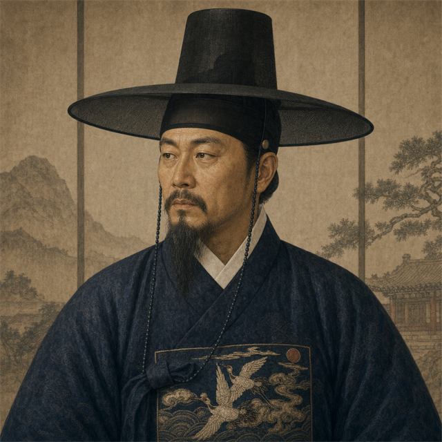
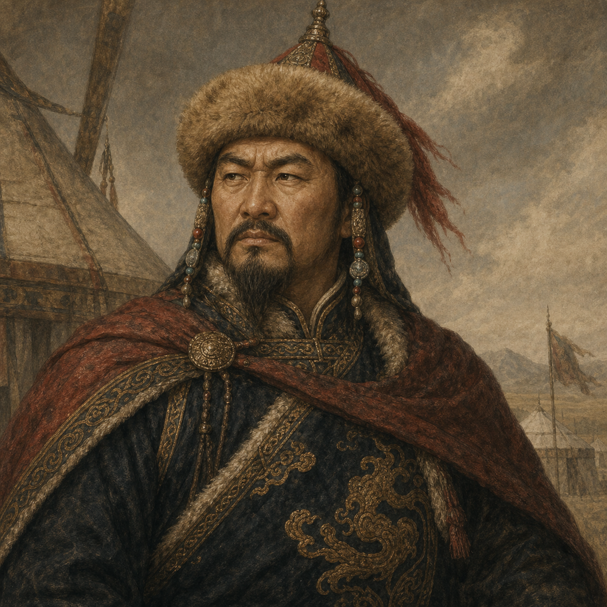
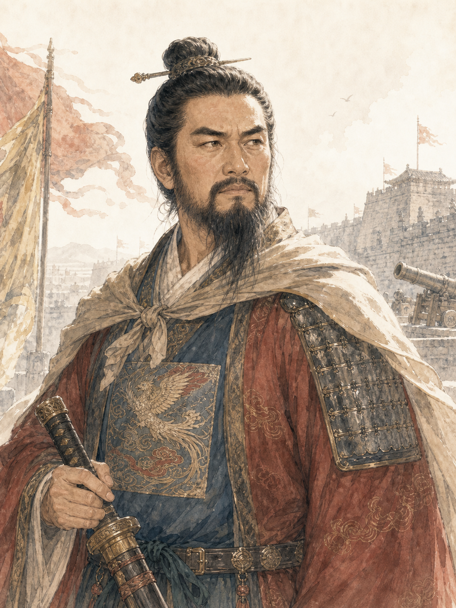

问对收尾 —— 补齐两个入口面（对话弹窗已另有真立绘版）：
① 召见模式选择
（朝堂问对 / 私下叙谈）·
② 求见队列
（阶下待见 + 有臣求见）·
③ 模式对照
（言录在案 vs 此谈不录）。沿真机
_wdPickMode
/
renderWenduiChars
结构，接真立绘。
① 召见 · 模式选择
—— 点官员→择「朝堂问对」严肃正式·起居注在场 / 「私下叙谈」屏退坦诚
召见 · 毕自严
户部尚书 · 东林 · 忠 74
此前有 5 条对话记录
殿
朝堂问对
起居注官在场 · 严肃正式 · 言辞有度
密
私下叙谈
屏退左右 · 更坦诚亦更絮叨
召见
取消
② 求见队列
—— 非玩家发起：使节/外藩【阶下待见】+ 忠极高或心有忧事者【有臣求见】，缘由系真机派生
阶下待见
使节 · 外藩 · 特请 · 等待阙下决断
2 人

使节
朝鲜使臣
外藩
奉国王咨文，为椵岛毛文龙索饷扰民事，乞陛下裁断。
接见
暂却

使节
喀喇沁使者
外藩
为市赏互市事请命，愿助朝廷牵制建虏，求岁赐。
接见
暂却
有臣求见
忠极高或心有忧事者 · 可速见以安其心
3 人

袁崇焕
武将
面带忧色，似有为难之事。
接见
不见
孙承宗
东林
神色凝重，欲进忠言。
接见
不见
温体仁
浙党
前日来函未获回复，亲至求见。
接见
不见
③ 模式对照
—— 同一人，朝堂问对 vs 私下叙谈：记录与言辞之别
殿
朝堂问对
起居注 · 言录在案
起居注官在场，奏对入录。臣下言辞有度、引经据典、不轻吐真章。
毕自严
臣谨奏：太仓见存银四十七万两，加派之议关乎民命，臣不敢擅断，伏乞圣裁。
御笔
卿之奏对，朕已悉。着户部详议覆奏。
密
私下叙谈
屏退左右 · 此谈不录
屏退左右，不入起居注。臣下更坦诚——敢吐真言、亦多絮叨牢骚，可探深隐。
毕自严
陛下既屏退左右，臣便直言了——加派断不可行！户部账上那点家底，臣夜里都睡不着。魏党还在户科插手……
御笔
但说无妨。此间唯你我二人。
问对完整流程补齐：
召见模式
(朝堂/私下·沿 _wdPickMode·真立绘+对话记录数) ·
求见队列
(阶下待见 GM._pendingAudiences 使节外藩 / 有臣求见派生缘由·接见/暂却/不见) ·
模式对照
(朝堂入起居注·言辞有度 / 私下不录·更坦诚)。加上已有的对话弹窗(真立绘版)，问对四面齐全。落地仍只动样式与渲染。